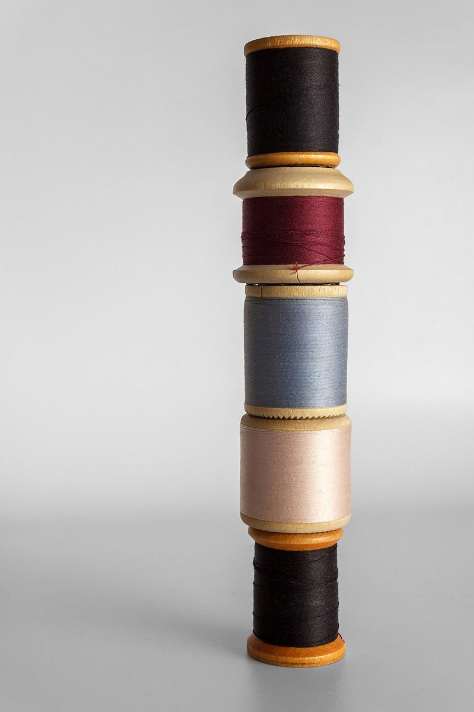
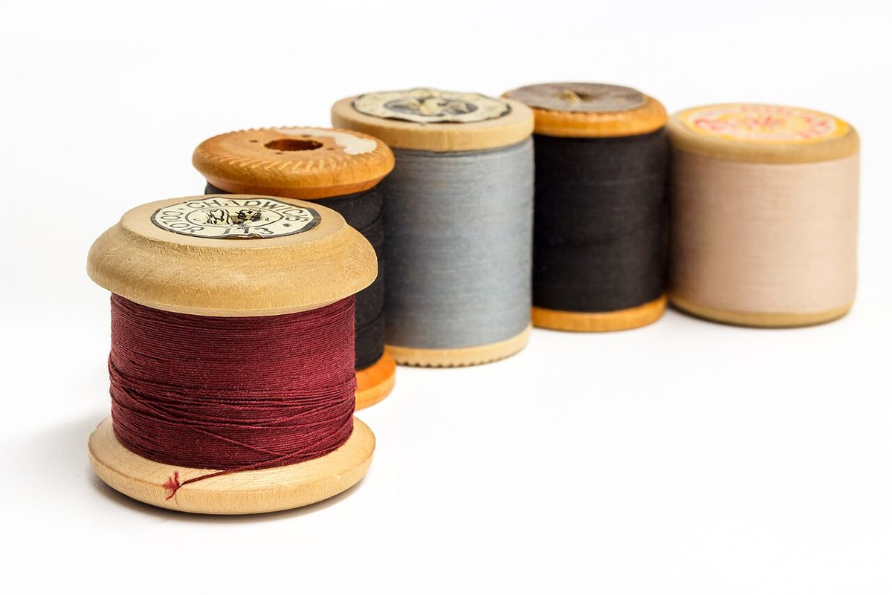
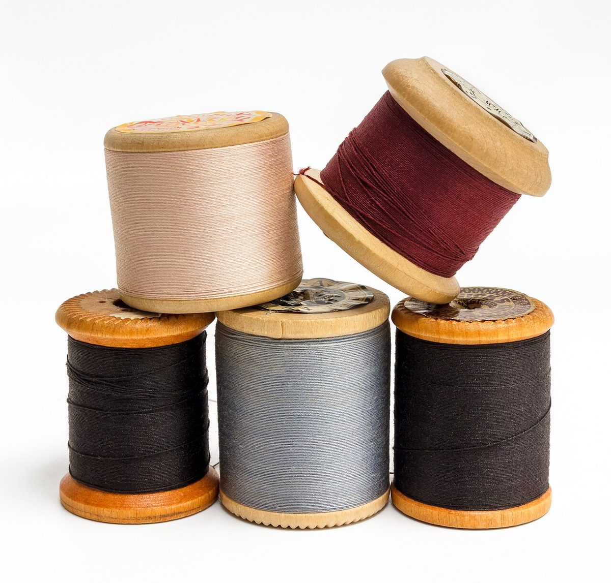
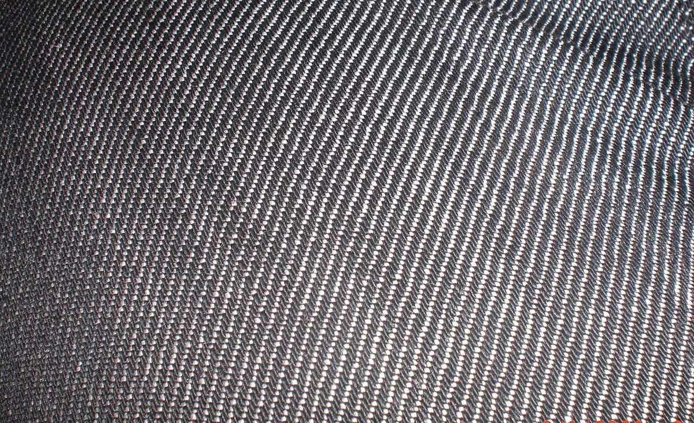

店のこと
店のこと
お店について確認できているのは、所在地・電話番号・Instagramのアカウントだけです。
このページの「縫い方」の部分は、制作側が連想して書いたものです。お店の実際の様子・考え・メニューとは関係がありません。
確認できていること
- 店名は「geecoffee」、業種はカフェ
- 所在地は佐賀県唐津市松南町２−７６−４(〒847-0021)
- 電話番号は0955-58-7376(Googleマップ記載)
- Instagramは @_geecoffee
- 営業時間・定休日・メニュー・価格・ご予約・駐車場は準備中

ふたご文字の縫い方
ee と ff と ee
- 1
ee(いち組め)
gee の「ee」。同じ文字がふたつ。ジーンズのステッチのように、二本並べて縫います。
- 2
ff(に組め)
coffee の真ん中の「ff」。つなぎ目の糸のように、背の高い文字がふたつ並びます。
- 3
ee(さん組め)
最後の「ee」で縫い止め。始まりと終わりが同じ「ee」で、ひと巡りします。
ここまで、すべて制作側の連想です(お店の理念・由来とは無関係)。


